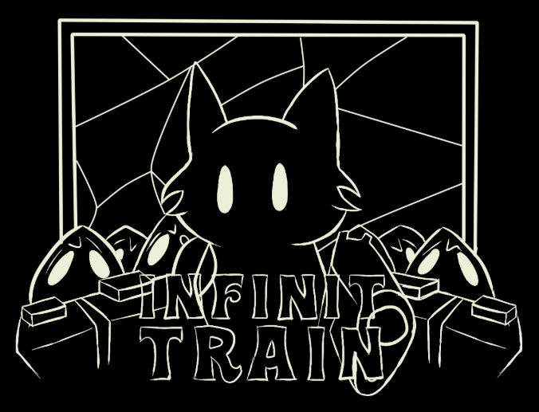

(81) 99999-9999
(81) 99999-9999Olá, meu nome é Fabricio! Sou estudante de Ciência da Computação e atuo como desenvolvedor Front-end, em transição para Fullstack. Também tenho experiência com desenvolvimento de jogos 2D utilizando GameMaker Language (GML) e estou explorando o universo do C#. Tenho paixão por tecnologia, interfaces bem projetadas, código limpo e jogos indie. Trabalho com React, Tailwind CSS, HTML, CSS, JavaScript, TypeScript, Python, GML e possuo conhecimentos em C#.
(81) 99999-9999| Projeto | Função | Período | Detalhes |
|---|---|---|---|
|  | Desenvolvedor Indie | 2022 | Jogo desenvolvido em gml para a CntrlAltJam2 |
| Desenvolvedor Back-end | 2025 | Backend desenvolvido em Node.js com Express e MongoDB |
ETE JURANDIR BEZZERA LINS ETE JURANDIR BEZZERA LINS ETE JURANDIR BEZZERA
LINS
Ensino Fundamental, Desenvolvimento de Sistemas